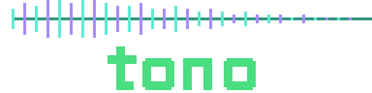

The complete piece: 800 notes converted from MIDI with the performance's
rubato and sustain pedal intact, played on a SoundFont grand. One
author_sound call.
The same hook re-gridded to a rigid 140 bpm: pitched cowbell lead, tanh-driven 808 ducked under the kick, bitcrushed lo-fi piano, hat rolls, mixed on the stereo console to −12 LUFS.
Drum kit + fingered bass + e-piano comping + string pad over an Am–F–C–G groove, each on its own panned track, glued by a master-bus compressor and stereo-spread reverb.
Eight detuned supersaw tracks wander in a scattered cluster, then glide over 5.5 seconds onto a five-octave D chord across the full stereo stage.
A square wave sliding up then down every 125 ms — the chomp drawn directly into the note list.